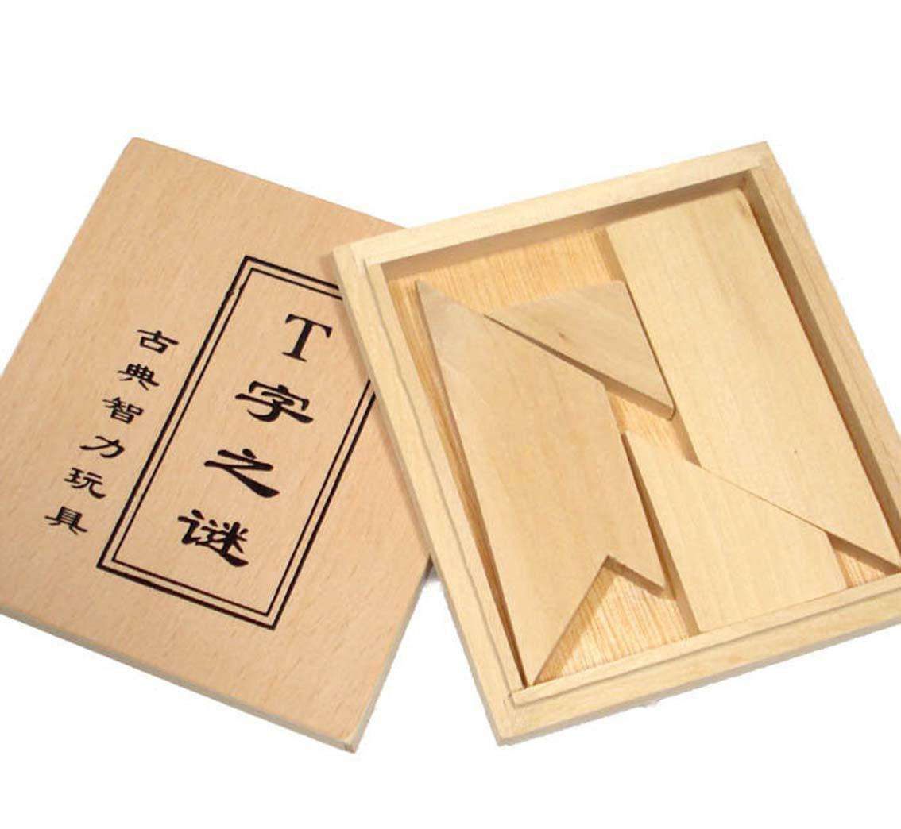
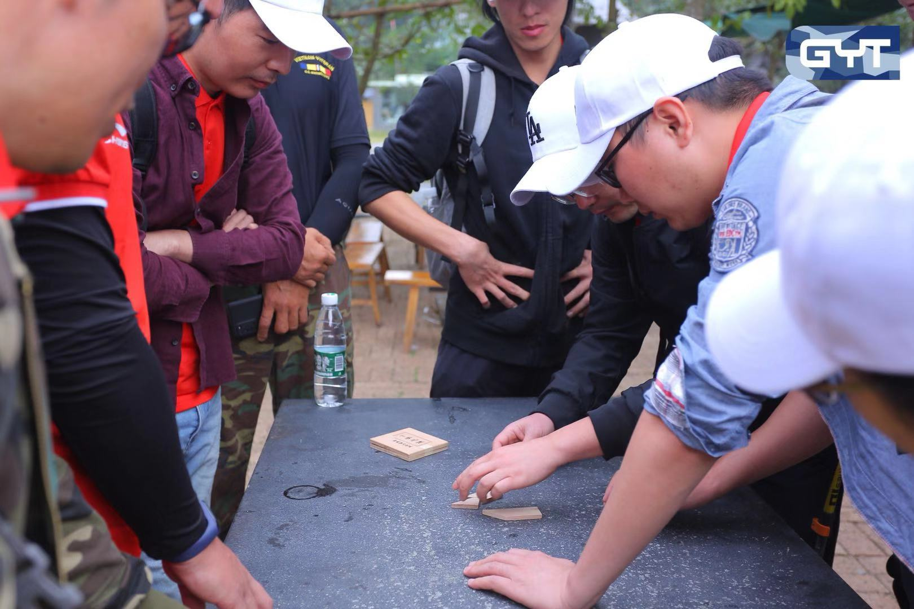
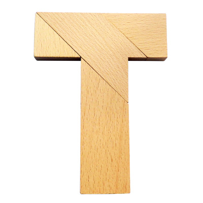

从拼T字中重新理解团队合作
从拼T字中重新理解团队合作
昨天上午的徒步出发前，教练给我们每支队伍一盒《T字之谜》拼图，先完成的队伍先出发。要求拼出一个大写字母 T，且四周必须是直角。很不幸，我们成了十支队伍里面，最后拼出 T 字的队伍。

此后一段时间，我一直在反思，尤其是当听到有人说：“你们小组很多聪明人呀，怎么垫底了呢？”
虽然只有区区四块拼图，看似简单，却隐藏着大智慧。我们花了不少时间摆弄来、摆弄去，怎么试都失败了。不是缺一个角，就是多一个边。

我们在这里犯了几个错误：
- 最长边一定是外沿；
- 水平线一定是水平线，斜线一定是斜线；
- 缺口必须要填补，否则不能形成直角。
虽然教练多次提醒需要突破思维，但是思维有那么容易突破吗？经过多年的学习和工作，我们早已建立起了一套思维框架，使得我们总是习惯于用自己的角度和方式去看待这个世界。
就这样，我们一遍遍尝试，一遍遍接近，又一遍遍失败。我们很想突破思维，但又无意识地被固化的思维拉回去。比如前面提到的错误，其实它们都是未经验证的假设。因为长边长，所以理所当然地作为外沿；因为边水平，所以理所当然地让它继续保持水平；因为有缺口，所以一定要想方设法把它补齐。我们受这些思维影响，不断越陷越深，毫无进展。
最后我们发现，其实长边不一定要做外沿，两条甚至三条短边组合也是可以的；水平线转个角度可以变成斜线，斜线转个角度同样可以变成水平线；缺口也不是非得要填补的，有些缺口只是看起来像缺口而已。

不知道是凑巧还是我想多了，我在反思的过程中突然意识到，字母 T 也许是 Team 的意思，背后的思维也非常值得在团队建设和团队协作中学习。比如说：
- 企业里面能力强的团队或个人是否都要做向外的主营业务？虽然说主营业务能带来现金流，应该重兵把守。但从长远来看，建立核心团队专注内部流程的优化、基础软件的开发、先进技术的预研也不容忽视。健康的企业、团队和个人应该是内外兼修的，而不是外强中干。
- 每个团队或个人的专业技术能力有所不同，但如果总是以过往的学习、工作经验来定义员工，什么专业毕业的学生就应该做什么工作，什么部门的员工就应该做什么业务。虽然可以通过精细分工提高工作效率、减少管理工作，但长远来看也会产生一些弊病，比如使得团队活力低下，从而限制企业的发展。所以企业应该考虑建立灵活的轮岗、转岗机制，激活每一个员工，在水平线和斜线之间找到一个合适的角度。
- 团队需要不同技能的人，而每个成员又有不同的知识背景、专业技能、工作习惯，甚至兴趣爱好。这些差异在不同人看来，可能是优点，也可能是缺点。然而，优点和缺点、优势和劣势都是可以转换的。我们以为的缺点，也许恰恰就是团队发展的重点；我们以为的劣势，也许恰恰就是团队成功的关键。重要的不是想方设法填补缺点，而是正确地辨别出团队当下真正的优缺点，扬长避短。
一个能够长久发展下去的好企业、好团队，一定需要多元文化，也一定需要保持开放包容。重视人的成长，才能实现共赢！
这么想想，其实还是蛮有趣的。垫底虽然很难受，但也让我深深地记住了这个 T，帮助我在以后的工作生活中，提醒我要从不同角度看问题。我想这不仅适用于团队工作，在日常生活、为人处世方面也可以灵活运用。当然啦，我们还是要不断学习、不断成长，建立一套更加完善的思维。同时，也要保持纯粹，学会放下包袱，打破常规，做一个童心未泯的大人。
成长是一件美好的事，但愿你我都能成为自己想要的样子！
本博客所有文章除特别声明外，均采用 CC BY-SA 4.0 协议 ，转载请注明出处！